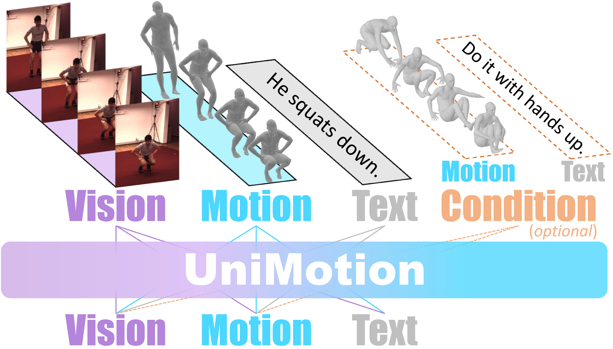
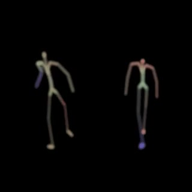
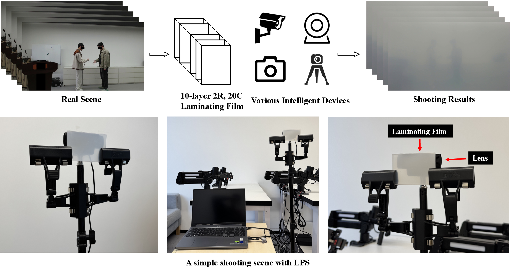
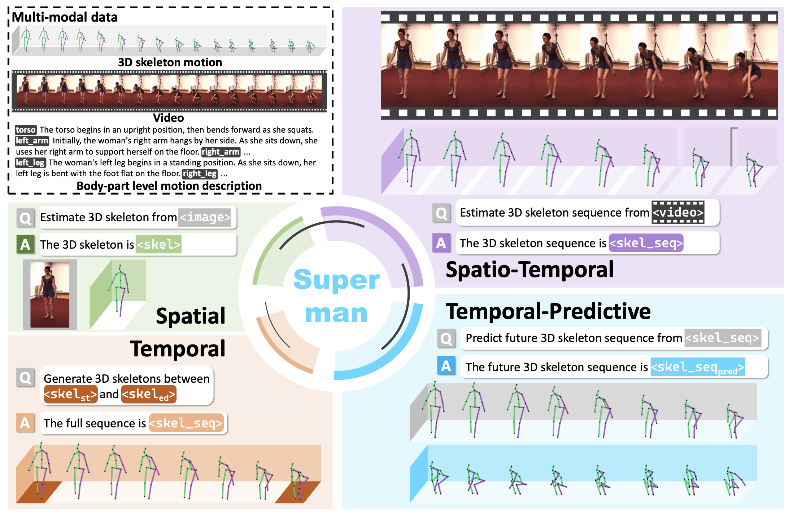
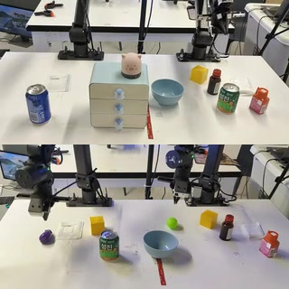
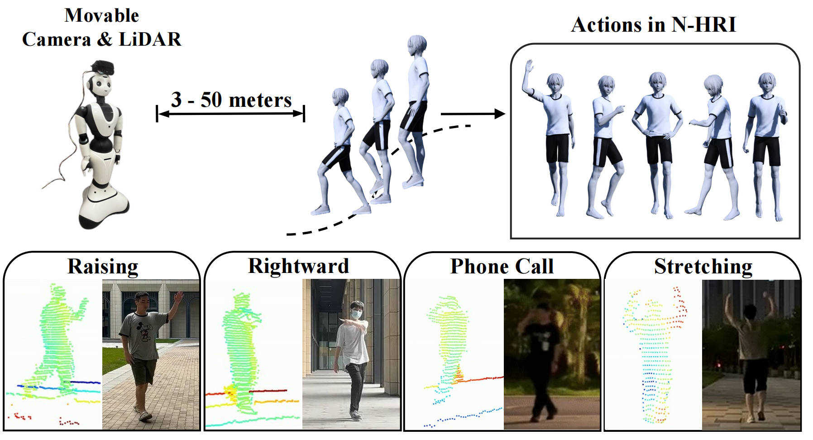
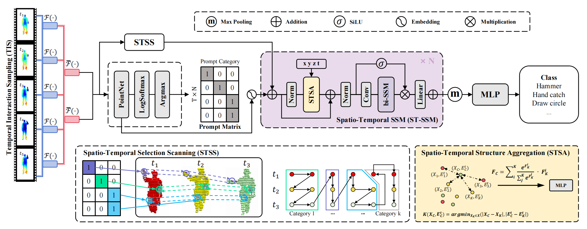
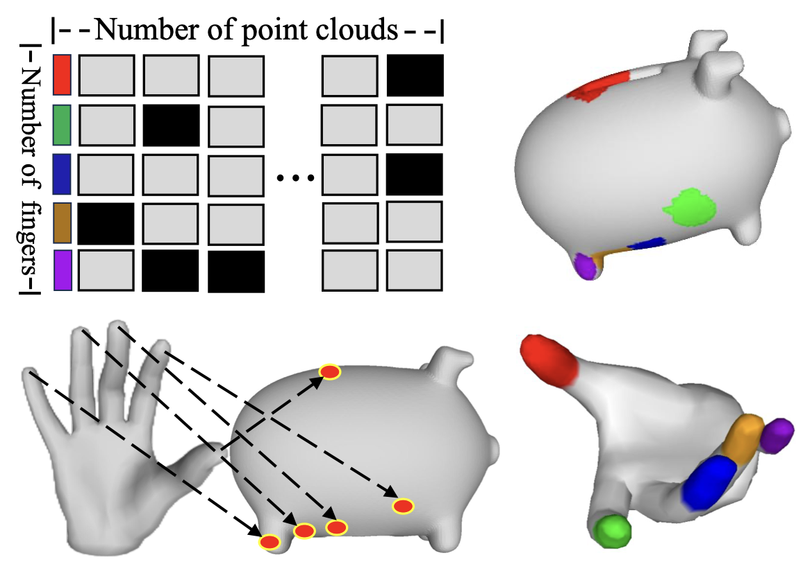

Ziyi Wang 王梓懿
I am a Ph.D. student in Computer Science and Technology at
Peking University ,
advised by Prof.
Mengyuan Liu
and Prof.
Hong Liu .
My research focuses on
Multimodal Large Language Models,
Human Motion Perception and Generation,
and Embodied AI.
Before that, I received my B.S. degree in Computer Science and Technology from
Ocean University of China in 2024 (ranked top 1 out of 289 students).
Email /
Google Scholar /
GitHub
News
[2026-06]
UniMotion is accepted by ECCV 2026 !
[2026-05]
MSPNet is accepted by IEEE Transactions on Image Processing (TIP) !
[2026-04]
SkeletonLLM is accepted by ICML 2026 !
[2026-02]
Superman is accepted by CVPR 2026 !
[2025-12]
MP1 is accepted by AAAI 2026 !
[2025-06]
ACTIVE and UST-SSM are accepted by ICCV 2025 !
[2024-07]
ClickDiff is accepted by ACM MM 2024 as an oral presentation!
Publications
* indicates equal contribution, # indicates corresponding author.

Ziyi Wang* ,
Xinshun Wang* ,
Shuang Chen*,
Yang Cong ,
Mengyuan Liu#
European Conference on Computer Vision (ECCV) , 2026

Ziyi Wang* ,
Peiming Li* ,
Xinshun Wang* ,
Yang Tang ,
Kai-Kuang Ma ,
Mengyuan Liu#
International Conference on Machine Learning (ICML) , 2026

Mengyuan Liu ,
Ziyi Wang# ,
Peiming Li# ,
Junsong Yuan
IEEE Transactions on Image Processing (TIP)

Xinshun Wang* ,
Peiming Li* ,
Ziyi Wang* ,
Zhongbin Fang ,
Zhichao Deng ,
Songtao Wu ,
Jason Li ,
Mengyuan Liu#
IEEE/CVF Conference on Computer Vision and Pattern Recognition (CVPR) , 2026

Juyi Sheng*,
Ziyi Wang* ,
Peiming Li ,
Mengyuan Liu#
AAAI Conference on Artificial Intelligence , 2026

Ziyi Wang ,
Peiming Li ,
Hong Liu ,
Zhichao Deng,
Can Wang ,
Jun Liu ,
Junsong Yuan ,
Mengyuan Liu#
IEEE International Conference on Computer Vision (ICCV) , 2025

Peiming Li ,
Ziyi Wang ,
Yulin Yuan,
Hong Liu ,
Xiangming Meng ,
Junsong Yuan ,
Mengyuan Liu#
IEEE International Conference on Computer Vision (ICCV) , 2025

Peiming Li* ,
Ziyi Wang* ,
Mengyuan Liu# ,
Hong Liu ,
Chen Chen
ACM International Conference on Multimedia (ACM MM) , 2024 (Oral Presentation)
Reviewer
Journals
IEEE Transactions on Image Processing (TIP), Pattern Recognition (PR)
Conferences
ICLR 2027, AAAI 2027, ICML 2026, CVPR 2026, ICCV 2025
Competition Awards
ICPC Asia Xi'an Regional Contest, Bronze Medal 2023 ICPC China Shandong Provincial Programming Contest, Silver Medal 2023 Lanqiao Cup National Contest (C++ A Group), Third Prize 2022
Selected Honors
Peking University Luo Yuehua Scholarship 2025 Peking University "Sanhao" Student Award 2025 Outstanding Graduate of Shandong Province 2024 Ocean University of China Presidential Scholarship (10/4,000+) 2023 CCF Elite Collegiate Award (99 nationwide) 2023 National Scholarship (Undergraduates) 2023 AEON Scholarship, Aeon (Japan) 2022